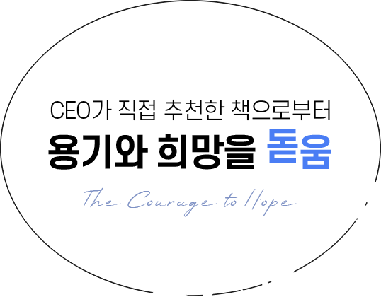
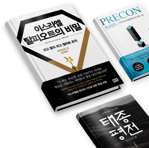

CEO 회원님들께서 가장 많이 추천한 책은 「이어령의 마지막 수업」입니다.
책의 기반이 된 인터뷰 당시 죽음을 앞두고 있었음에도
도움을 필요로 하는 연약한 사람이 아닌,
도움을 주려는 사람의 자세였다는 석학 이어령.
그의 마지막 저서는 리더들에게도 큰 도움을 주고 있나 봅니다.
Salon de SERICEO
CEO가 직접 추천한 책으로부터 용기와 희망을 돋움

이스라엘을 강국으로 만든 엘리트 조직, 탈피오트 부대. <이스라엘 탈피오트의 비밀>에서 이스라엘 혁신의 비결을 확인해 봅니다.
제이슨 게위츠 著
권력의 화신으로 기억되는 태종 이방원이 사실은 태평성대 조선을 만든 탁월한 리더였다? 탁월한 정치가 태종을 분석합니다.
박현모 著
프로젝트의 성패를 가르는 결정적 시점은 언제일까요? 프로젝트의 성공요소를 <프리콘>에서 살펴봅니다.
김종훈 著
단기 성과와 장기 성장을 동시에 달성하는 방법은? <항상 이기는 조직>에서 그 힌트를 얻어봅니다.
데이비드 코트 著